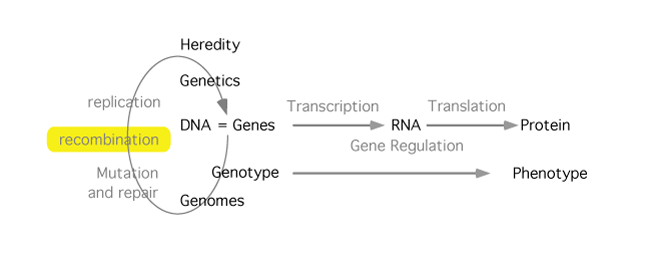

Recombination

Recombination plays a major role in the generation of variety in eukaryotes. Each generation, the combination of alleles is shuffled anew. In this module we will focus on recombination and its effects at a practical level: When and where does recombination occur? What are its effects on the genome? We will look briefly at recombination at a mechanistic level in E. coli, where we understand much of the molecular mechanism involved. It is believed that the mechanism is very similar in eukaryotes although we have not identified all of the players. Finally, we will look at two other recombination mechanisms that have clinical relevance, site-specific recombination and transposition. These mechanisms form part of the life-cycle of several viruses, are involved in gene regulation, and also figure in attempts to develop gene-therapy approaches.
Learning resources
- Study Guide
- Narration: Homologous Recombination - fixed a broken DNA
- Narration: Gene Conversion
- Narration: Fixing a broken replication fork
- Narration: Site-Specific Recombination
- The Holliday Junction [not available on this site]